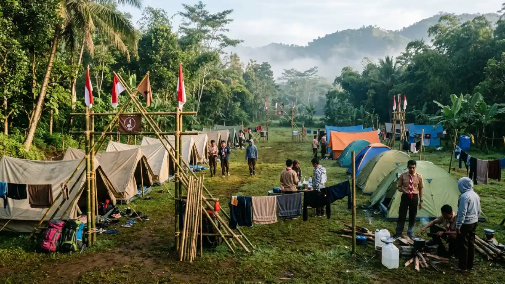

Ilustrasi Suasana kegiatan kemah pramuka di area camping ground
Lembah Tumpang, Tumpang, Malang.
Ilustrasi Suasana kegiatan kemah pramuka di area camping ground
Lembah Tumpang, Tumpang, Malang.
Kegiatan kemah pramuka Lembah Tumpang adalah perkemahan terpandu di camping ground resort Tumpang, Malang, yang memadukan latihan kepramukaan, permainan kelompok, dan pengenalan alam.
- Lembah Tumpang Resort berada di Kecamatan Tumpang, Kabupaten Malang, sekitar 14,7 km atau 32 menit dari pusat Kota Malang menurut Liputan6.
- Resort ini menyediakan camping ground, sehingga dapat dipakai untuk perkemahan sekolah, gugus depan, maupun kegiatan pelatihan.
- Kegiatan umumnya mencakup upacara, baris-berbaris, pionering, jelajah, api unggun, dan permainan kerja sama regu.
- Keselamatan, perizinan, dan pembagian tugas pembina menentukan keberhasilan kemah.
- Harga, jam operasional, dan aturan wajib dikonfirmasi langsung ke pengelola karena dapat berubah.
- Apa Itu Kegiatan Kemah Pramuka Lembah Tumpang?
- Di Mana Lokasi Lembah Tumpang dan Bagaimana Akses Menuju Ke Sana?
- Apa Saja Fasilitas yang Mendukung Kemah Pramuka di Lembah Tumpang?
- Kegiatan Apa Saja yang Biasa Dilakukan Saat Kemah Pramuka?
- Siapa Saja yang Cocok Mengikuti Kemah Pramuka di Lembah Tumpang?
- Apa Manfaat Kemah Pramuka Bagi Peserta Didik?
- Bagaimana Persiapan Umum Sebelum Berkemah di Lembah Tumpang?
- Bagaimana Menjaga Keselamatan Peserta Selama Kemah?
- Apa Kesalahan Umum Saat Menyelenggarakan Kemah Pramuka?
- Bagaimana Tips Agar Kemah Pramuka Berjalan Sukses?
- Bagaimana Perbandingan Camping Ground Resort dengan Lokasi Kemah Lain?
- Kesimpulan
- FAQ
Apa Itu Kegiatan Kemah Pramuka Lembah Tumpang?
Kegiatan kemah pramuka Lembah Tumpang adalah program berkemah anggota Pramuka di kawasan wisata Lembah Tumpang, Kecamatan Tumpang, Kabupaten Malang, dengan fokus pada pembinaan karakter.
Perkemahan adalah salah satu metode utama pendidikan kepramukaan. Peserta belajar hidup mandiri di alam terbuka, bekerja dalam regu, dan menerapkan nilai Dasa Darma Pramuka.
Lembah Tumpang dipilih banyak penyelenggara karena menyediakan area berkemah dalam satu kawasan resort yang memiliki akses jalan, area parkir, toilet, dan fasilitas pendukung lain.
Kegiatan ini dapat berupa perkemahan sabtu-minggu, kemah bakti, latihan dasar kepemimpinan, atau pelantikan anggota baru gugus depan.
Meskipun formatnya dapat disesuaikan dengan berbagai kebutuhan, tujuan utamanya tetap konsisten: mengembangkan disiplin, kemandirian, dan kepedulian sosial pada diri peserta didik.
Di Mana Lokasi Lembah Tumpang dan Bagaimana Akses Menuju Ke Sana?
Lembah Tumpang Resort berlokasi di Jalan Slamet, Gang Gumuk Agung, Desa Glanggang, Kecamatan Tumpang, Kabupaten Malang, dan dapat dijangkau dengan bus, minibus, atau kendaraan pribadi.
Menurut Liputan6, jarak dari pusat Kota Malang sekitar 14,7 km dengan waktu tempuh kurang lebih 32 menit pada kondisi lalu lintas normal.
Rombongan sekolah sebaiknya menambah waktu cadangan karena kepadatan jalan pada akhir pekan atau musim liburan dapat memperlambat perjalanan.
Bus besar perlu dipastikan dapat masuk sampai area resort, karena akses gang atau jalan kampung kadang membatasi ukuran kendaraan.
Panitia disarankan melakukan survei lokasi sebelum hari pelaksanaan, mencatat titik penurunan peserta, area parkir, serta jalur menuju camping ground agar kedatangan rombongan berjalan tertib.
Apa Saja Fasilitas yang Mendukung Kemah Pramuka di Lembah Tumpang?
Fasilitas yang tercatat di sumber publik meliputi camping ground, kolam renang, gazebo, ruang pertemuan, area parkir, toilet, serta kafe dan restoran di dalam kawasan resort.
Liputan6 menyebut resort ini memiliki convention hall yang dapat disewakan, gazebo, area berkemah, kolam renang, area parkir luas, dan toilet.
Sementara itu, detikJatim pada 26 Desember 2023 menyebut adanya 6 kolam dengan keunikan masing-masing serta fasilitas camping ground.
Bagi pembina, ruang pertemuan berguna untuk sesi materi atau cadangan kegiatan saat hujan.
Karena data tersebut berasal dari publikasi sebelumnya, ketersediaan fasilitas, kondisi perawatan, dan aturan penggunaan kolam perlu dipastikan ulang kepada pengelola menjelang tahun 2026 sebelum jadwal dikunci.
Kegiatan Apa Saja yang Biasa Dilakukan Saat Kemah Pramuka?
Kegiatan kemah pramuka umumnya terdiri dari upacara pembukaan, baris-berbaris, pionering, sandi dan semaphore, jelajah, permainan kelompok, api unggun, dan upacara penutupan.
Setiap kegiatan punya tujuan pendidikan yang jelas. Upacara melatih kedisiplinan dan rasa hormat. Pionering mengajarkan simpul, ikatan, serta kerja sama saat membangun menara atau jembatan tali. Sandi dan semaphore melatih ketelitian dan komunikasi.
Jelajah atau penjelajahan mengasah pengamatan dan kemampuan membaca peta sederhana. Api unggun menjadi sarana kebersamaan melalui yel-yel, lagu, dan pentas seni.
Pembina dapat menyesuaikan porsi tiap kegiatan dengan usia peserta, kondisi cuaca, dan tujuan kurikulum gugus depan. Kegiatan yang berisiko, seperti permainan air, perlu pengawasan ketat.

Ilustrasi Deretan tenda regu pramuka yang sudah didirikan di camping ground Lembah Tumpang.Siapa Saja yang Cocok Mengikuti Kemah Pramuka di Lembah Tumpang?
Kemah pramuka di Lembah Tumpang cocok untuk anggota Pramuka golongan Siaga, Penggalang, Penegak, dan Pandega, dengan tingkat kegiatan yang disesuaikan menurut usia.
Gerakan Pramuka membagi anggota menjadi empat golongan: Siaga (sekitar 7-10 tahun), Penggalang (sekitar 11-15 tahun), Penegak (sekitar 16-20 tahun), dan Pandega (sekitar 21-25 tahun).
Peserta Siaga umumnya membutuhkan pendampingan lebih dekat dan kegiatan yang singkat serta bermain. Penggalang mulai diberi tanggung jawab regu.
Penegak dan Pandega dapat diberi tugas kepanitiaan, navigasi, serta pelatihan kepemimpinan.
Selain anggota Pramuka, sekolah atau komunitas yang menyelenggarakan kegiatan outbound dan pelatihan karakter juga dapat memanfaatkan camping ground, selama mengikuti aturan pengelola.
Apa Manfaat Kemah Pramuka Bagi Peserta Didik?
Manfaat utama kemah pramuka adalah melatih kemandirian, disiplin, kerja sama, kepemimpinan, dan kepedulian terhadap lingkungan melalui pengalaman langsung di alam terbuka.
Peserta belajar mengatur waktu, menyiapkan makanan sederhana, menjaga kebersihan tenda, dan menyelesaikan tugas bersama regu.
Pengalaman jauh dari rumah selama satu atau dua malam sering menumbuhkan rasa percaya diri. Pembina juga dapat mengamati karakter peserta secara lebih utuh daripada di kelas.
Dari sisi sosial, kemah mempertemukan peserta dari kelas atau sekolah berbeda sehingga memperluas pertemanan.
Dari sisi lingkungan, kegiatan memungut sampah dan menjaga area kemah menanamkan kebiasaan bertanggung jawab.
Manfaat tersebut bersifat umum dan hasilnya bergantung pada kualitas bimbingan serta rancangan kegiatan.
Bagaimana Persiapan Umum Sebelum Berkemah di Lembah Tumpang?
Persiapan kemah mencakup penetapan tujuan, pengajuan izin sekolah dan orang tua, survei lokasi, penyusunan jadwal, pembagian regu, penyiapan logistik, dan rencana darurat.
Mulailah dengan menentukan tujuan kegiatan dan jumlah peserta, lalu hubungi pengelola resort untuk menanyakan ketersediaan tanggal, tarif, dan aturan camping ground.
Mohon untuk menyiapkan surat izin dari pihak sekolah beserta persetujuan tertulis yang telah ditandatangani oleh orang tua atau wali. Bagi peserta ke dalam regu dengan komposisi seimbang, lengkap dengan pemimpin regu.
Susun daftar perlengkapan pribadi dan regu, serta rencana konsumsi yang mempertimbangkan alergi peserta.
Siapkan kotak P3K, nomor kontak darurat, dan rujukan fasilitas kesehatan terdekat. Briefing singkat kepada peserta sebelum berangkat membantu mengurangi kebingungan di lapangan.
Bagaimana Menjaga Keselamatan Peserta Selama Kemah?
Keselamatan peserta dijaga dengan rasio pembina yang memadai, pengawasan kegiatan air, daftar hadir berkala, kotak P3K, serta prosedur darurat yang dipahami semua panitia.
Tetapkan jam tidur dan jam kegiatan yang jelas, serta pisahkan area tenda putra dan putri. Pembina perlu melakukan apel malam untuk memastikan seluruh peserta berada di tempat.
Jika kegiatan melibatkan kolam renang, wajibkan pendampingan, batasi jam, dan jangan izinkan peserta berenang tanpa pengawasan.
Pastikan peserta yang memiliki riwayat penyakit, seperti asma atau alergi, tercatat dan membawa obat pribadi. Sediakan kendaraan atau rencana evakuasi bila terjadi cedera serius.
Informasi ini bersifat umum, sehingga pembina tetap perlu mengikuti aturan keselamatan sekolah, kwartir, dan pengelola lokasi.
Apa Kesalahan Umum Saat Menyelenggarakan Kemah Pramuka?
Kesalahan umum meliputi jadwal terlalu padat, pengawasan kurang, perlengkapan tidak dicek, izin orang tua tidak lengkap, dan tidak menyiapkan rencana cadangan saat hujan.
Jadwal yang terlalu padat membuat peserta lelah dan rawan cedera. Rasio pembina yang rendah menyulitkan pengawasan, terutama pada malam hari.
Banyak panitia lupa memeriksa kondisi tenda dan tali sebelum dipakai. Konsumsi yang terlambat atau tidak sesuai kebutuhan juga mengganggu semangat peserta.
Kesalahan lain adalah mengabaikan kebersihan area sehingga sampah menumpuk. Untuk menghindarinya, lakukan simulasi jadwal, siapkan petugas khusus kebersihan, dan siapkan kegiatan dalam ruangan sebagai cadangan jika cuaca berubah.
Bagaimana Tips Agar Kemah Pramuka Berjalan Sukses?
Kemah pramuka berjalan sukses bila tujuannya jelas, jadwal realistis, peserta dilibatkan dalam tugas, dan panitia melakukan evaluasi singkat setiap akhir hari.
Libatkan peserta dalam menyusun aturan regu agar mereka merasa memiliki kegiatan. Berikan peran bergilir, seperti petugas dapur, kebersihan, dan dokumentasi.
Gunakan permainan yang menantang tetapi aman, dan sisipkan waktu istirahat yang cukup. Evaluasi singkat setelah api unggun membantu pembina mengetahui kebutuhan esok hari.
Dokumentasikan kegiatan sebagai bahan laporan dan promosi gugus depan. Terakhir, tutup acara dengan refleksi: setiap peserta menyebutkan satu hal yang dipelajari. Cara ini menjadikan kemah bukan sekadar rekreasi, tetapi pengalaman belajar.
Bagaimana Perbandingan Camping Ground Resort dengan Lokasi Kemah Lain?
Camping ground resort menawarkan akses dan fasilitas lebih mudah dibanding hutan atau gunung, tetapi memiliki aturan pengelola dan biaya yang perlu diperhitungkan.
Perkemahan di halaman sekolah murah dan dekat, namun kurang memberi nuansa alam. Perkemahan di hutan atau kawasan gunung menantang, tetapi risiko, perizinan, dan kebutuhan logistik lebih tinggi.
Camping ground di resort seperti Lembah Tumpang berada di tengah: ada fasilitas toilet, parkir, dan area makan, sehingga cocok untuk peserta pemula dan golongan usia muda.
Parameter yang layak dibandingkan adalah jarak tempuh, biaya, fasilitas, tingkat risiko, dan kesesuaian dengan tujuan kegiatan. Pilihan terbaik bergantung pada kebutuhan setiap gugus depan, bukan pada satu lokasi tertentu.
Kesimpulan
Kegiatan kemah pramuka Lembah Tumpang cocok bagi gugus depan yang menginginkan perkemahan dengan fasilitas memadai dekat Kota Malang.
Tentukan tujuan, hubungi pengelola, siapkan izin, susun jadwal realistis, dan utamakan keselamatan. Konfirmasi harga serta aturan terbaru ke pengelola sebelum menetapkan anggaran 2026.
FAQ (Pertanyaan yang Sering Diajukan)